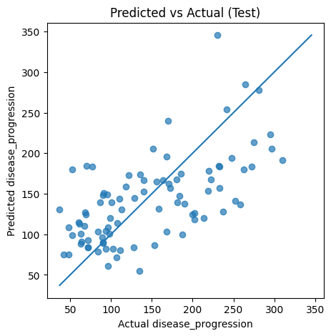
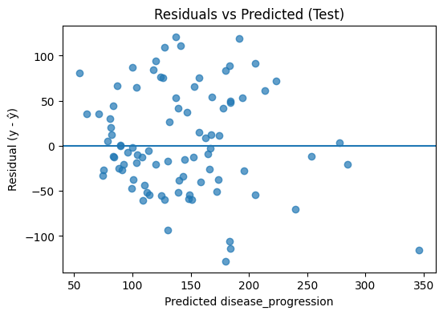
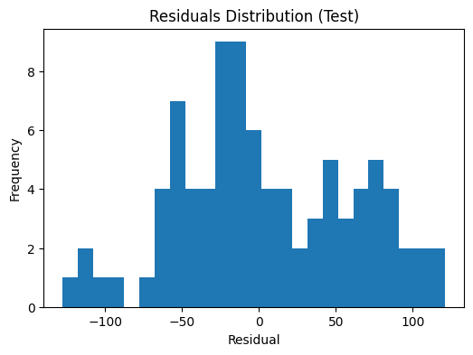

In this lesson we build a neural network regressor (MLP) for the Diabetes dataset. We’ll train an MLPRegressor, and evaluate with metrics and diagnostics. We’ll also add a lightweight uncertainty estimate using an ensemble of MLPs.
Learning objectives - Preprocess mixed features with ColumnTransformer (scaling + standardization). - Train and tune an MLPRegressor with early stopping. - Evaluate with \(\text{RMSE}\), \(\text{MAE}\), and \(R^2\); create residual and calibration plots. - Use a small ensemble of MLPs for predictive mean and uncertainty (std).
MLP for Regression (Theory)
A feed‑forward network with \(L\) layers composes affine maps and nonlinearities: \[
\hat{y} = f(x;\theta) = W^{(L)} a^{(L-1)} + b^{(L)}, \quad a^{(\ell)} = \phi\!\left(W^{(\ell)} a^{(\ell-1)} + b^{(\ell)}\right),
\] with \(a^{(0)} = x\), parameters \(\theta = \{W^{(\ell)}, b^{(\ell)}\}\), and activation \(\phi\) (e.g., ReLU).
We minimize mean squared error (MSE): \[
\mathcal{L}(\theta) = \frac{1}{n}\sum_{i=1}^n (y_i - f(x_i;\theta))^2.
\]
Early stopping regularizes by halting training if validation loss stops improving.
Standardization of numeric features helps optimization (well‑scaled inputs).
One‑hot encoding for categorical variables lets the network learn from categories.
Data: Diabetes (sklearn)
We use the built-in Diabetes dataset from scikit-learn, which contains 10 standardized numeric predictors and a continuous target disease_progression (a quantitative measure one year after baseline).
No categorical features here — preprocessing only needs standardization.
Train: RMSE=55.2 MAE=43.3 R^2=0.498
Test : RMSE=57.2 MAE=46.7 R^2=0.382
# Diagnosticsimport matplotlib.pyplot as pltimport numpy as npresiduals = y_test - y_pred_test# Predicted vs Actualplt.figure(figsize=(5,5))plt.scatter(y_test, y_pred_test, alpha=0.7)lo =min(y_test.min(), y_pred_test.min())hi =max(y_test.max(), y_pred_test.max())plt.plot([lo, hi], [lo, hi])plt.xlabel("Actual disease_progression")plt.ylabel("Predicted disease_progression")plt.title("Predicted vs Actual (Test)")plt.show()# Residuals vs Predictedplt.figure(figsize=(6,4))plt.scatter(y_pred_test, residuals, alpha=0.7)plt.axhline(0)plt.xlabel("Predicted disease_progression")plt.ylabel("Residual (y - ŷ)")plt.title("Residuals vs Predicted (Test)")plt.show()# Residual histogramplt.figure(figsize=(6,4))plt.hist(residuals, bins=25)plt.xlabel("Residual")plt.ylabel("Frequency")plt.title("Residuals Distribution (Test)")plt.show()



Lightweight Uncertainty via Ensembling
Train \(K\) networks with different random seeds and average their predictions: - The ensemble mean reduces variance. - The ensemble standard deviation (per sample) provides a pragmatic uncertainty proxy.